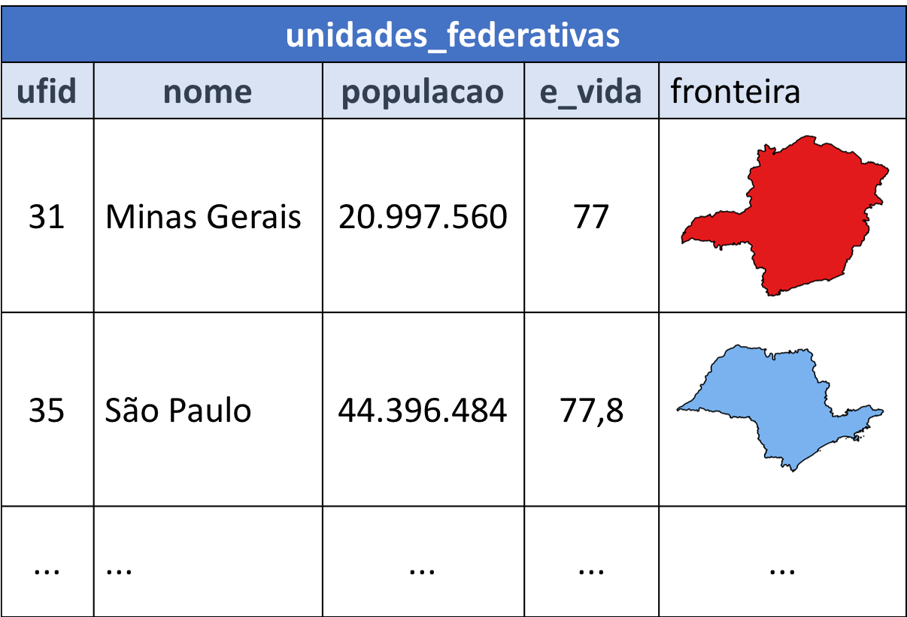

9.1. Introdução¶
{kind=link}
Nesta parte da aula iremos discutir como realizar a leitura e escrita de dados geoespaciais representados na forma de uma coleção de feições (feature collection). A Figura 9.1 mostra uma exemplo de coleção de feições, as unidades federativas do Brasil.
Figura 9.1 - Coleção de Feições.¶
Repare que essa forma de representação, em geral, assume que todos os objetos da coleção possuem uma estrutura comum, a qual denominamos de esquema das feições. O esquema das feições é formado pelo conjunto de atributos usados para caracterizar as feições do conjunto. Além disso, cada atributo é associado a um tipo de dado.
No caso da coleção mostrada na Figura 9.1 o esquema denominado unidades_federativas possui o seguinte conjunto de atributos:
ufid: código do IBGE, um número inteiro usado para identificar as unidades federativas.nome: nome da unidade federativa, uma string.populacao: total da população da unidade federativa, um número inteiro.e_vida: expectativa de vida, um número real.fronteira: limite da unidade federativa, representada por um tipo geométrico (MultiPolygon).
Atualmente existem inúmeros formatos para codificação de dados geoespaciais vetoriais: GeoJSON, GML, KML, ESRI Shapefile, Geomedia, Atlas BNA, entre outros. Além desses formatos de arquivo ainda encontramos dados geoespaciais armazenados e gerenciados por Sistemas Gerenciadores de Bancos de Dados (SGBD) como MySQL, PostgreSQL, IBM DB2, Oracle e Microsoft SQL Server. Outra forte tendência é a disponibilização de dados através de serviços Web, como o OGC WFS (Web Feature Service). Por conta disso, é importante usarmos tecnologias que nos abstraiam ao máximo dos detalhes de cada um desses formatos e sistemas.
Nesse sentido a biblioteca GDAL é um dos pilares básicos de praticamente todos os sistemas geoespaciais de software livre da atualidade. Em Python podemos utilizar essa biblioteca diretamente através de um binding (ou wrapper) que pode ser instalado com o gerenciador de pacotes da Anaconda ou pelo pip.
Apesar da GDAL ser uma biblioteca robusta e completa, sua API Python expõe os tipos e operações com um estilo de programação muito próximo da linguagem C/C++, que é usada para seu desenvolvimento. Por isso, existem outras bibliotecas em Python que tentam fornecer um estilo de programação mais próximo dos idiomas usados em Python. Nesse sentido, a Fiona é uma biblioteca que procura facilitar a leitura e escrita de dados geoespaciais adotando um estilo de programação mais próxima do universo Python.
Ao contrário da GDAL/OGR, que fornece um modelo de classes próprio (DataSource, Layer, Feature, FeatureDefn, Geometry) para acesso aos dados, a Fiona oferece esse suporte nos mesmos moldes dos protocolos de Entrada e Saída (E/S) da API de arquivos de Python (Python IO), além do uso de dicionários (mappings) e iteradores para acesso aos elementos do conjunto de dados. Por isso, nesta parte da aula iremos utilizar primeiramente a biblioteca Fiona para realizar a leitura e escrita de arquivos ESRI Shapefile. Depois iremos ver como realizar processamentos equivalentes usando o binding Python da biblioteca GDAL.
Vale ressaltar que a Fiona é construída sobre a OGR, parte da biblioteca GDAL voltada para tratamento de dados vetoriais. No entanto, ela não expõe nenhum dos tipos da GDAL. Os registros são mantidos em dicionários que seguem o formato GeoJSON. Os tipos geométricos retornados pela Fiona podem ser facilmente convertidos em geometrias da biblioteca Shapely. Também é possível usar a pyproj e a Rtree em conjunto com a Fiona.